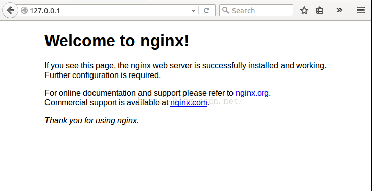
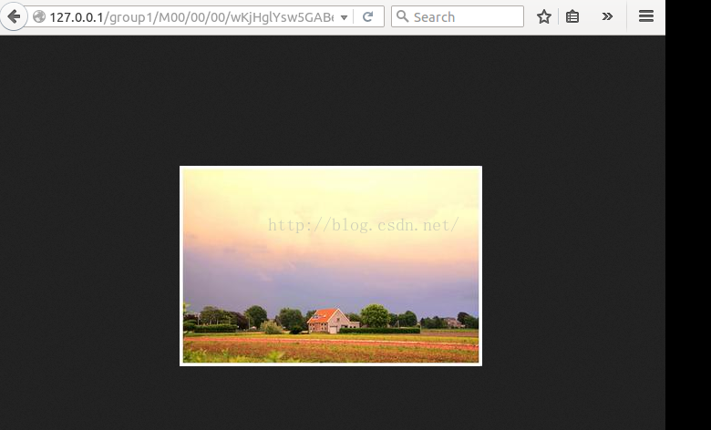

1. 下载软件并进行初步安装
1.1 下载安装文件
FastDFS 5.x 取消了对 libevent 的依赖，添加了对 libfastcommon 的依赖。
本部署说明用到的软件版本：
直接使用Github源码下载：
https://github.com/happyfish100
将仓库中四个源码全部下载下来：
- libfastcommon 1.29
- fastdfs 5.08
- fastdfs-nginx-module 1.18
- fastdfs-client-java 1.25
- fastdht 2.01
1.2 安装 fastdfs 软件
在每一台tracker和storage服务器上执行
1 | [root@localhost ~]# unzip libfastcommon-master.zip |
安装完成后，所有可执行文件在目录/usr/bin下，以fdfs_开头：
1 | [root@localhost ~]# ls /usr/bin/fdfs_* |
配置文件在目录/etc/fdfs下：
1 | [root@localhost ~]# ls /etc/fdfs |
2. 配置Tracker跟踪器
开放tracker监听端口访问（实验时防火墙全部关闭，未使用这部分配置）
1 | firewall-cmd--zone=public--add-port=22122/tcp--permanent |
2.1 修改配置文件
1 | mkdir -p /data/fastdfs |
2.2 开启fdfs tracker服务
1 | /usr/bin/fdfs_trackerd /etc/fdfs/tracker.conf |
2.3 设置开机自启动（实验时未使用）
1 | bash -c 'cat > /usr/lib/systemd/system/fdfs_trackerd.service << EOF |
2.4 确认tracker是否启动成功
1 | cat /data/fastdfs/logs/trackerd.log |
2.5 安装并配置 nginx 反向代理
（使用EPEL安装的NGINX的版本偏低1.0.2，推荐使用最新版本nginx-1.11.2.tar.gz，并配置反向代理服务）安装过程参见《RHEL 6.4 - Santiago 源代码编译安装 Nginx 1.11.2》
2.6 配置反向代理
在第5步安装结束后，配置一下Nginx，开启一下反向代理功能。
打开 /usr/local/nginx/conf/nginx.conf，在 http {} 中添加：
1 | upstream fdfs { |
在 server{} 中添加：
1 | location /M00 { |
3. Storage节点配置
3.1 开放tracker监听端口访问（实验时防火墙全部关闭，未使用这部分配置）
1 | firewall-cmd--zone=public--add-port=23000/tcp--permanent |
3.2 修改配置文件
1 | mkdir -p /data/fastdfs |
3.3 开启fdfs storage服务
1 | /usr/bin/fdfs_storaged /etc/fdfs/storage.conf |
3.4 设置开机自启动（实验时未使用）
1 | bash -c 'cat > /usr/lib/systemd/system/fdfs_storaged.service << EOF |
3.5 确认storage是否启动成功
1 | cat /data/fastdfs/logs/storaged.log |
4. client客户端配置
4.1 client 客户端配置
在tracker, storage之外的一台主机上安装FastDFS，然后执行：
1 | mkdir -p /data/fastdfs |
4.2 FastDFS测试
- 上传测试:
1 | joelhy@arminix: ~ $ |
- 查看文件信息:
1 | joelhy@arminix: ~ $ fdfs_file_info /etc/fdfs/client.conf |
- 下载测试:
1 | joelhy@arminix: ~ $ fdfs_download_file /etc/fdfs/client.conf \ |
5. storage server 安装 nginx 服务器
5.1 安装并配置 nginx 反向代理
（使用EPEL安装的NGINX的版本偏低1.0.2，推荐使用最新版本nginx-1.11.2.tar.gz，并配置反向代理服务）
安装过程参见《RHEL 6.4 - Santiago 源代码编译安装 Nginx 1.11.2》
在第4步结束后，采用下面方法编译、安装Nginx（带fastdfs-nginx-module)
安装Nginx和配置fastdfs-nginx-module
- 解压fastdfs-nginx-module-master.zip
1 | unzip fastdfs-nginx-module-master.zip |
修改配置文件
1 | cp fastdfs-nginx-module-master/src/mod_fastdfs.conf /etc/fdfs/ |
开始安装nginx（—prefix指定nginx安装到哪里， —add-module指定fastdfs-nginx-module的目录）
如果使用Nginx的rewrite功能，请在此之前安装pcre-8.39.tar.gz
1 | cd src |
./configure —prefix=/usr/local/nginx —add-module=/home/ems/chenhj/fastdfs-nginx-module-master/src
执行完成后可以看到最后的输出：1
2
3
4
5
6
7
8
9
10
11
12nginx path prefix: "/usr/local/nginx"
nginx binary file: "/usr/local/nginx/sbin/nginx"
nginx configuration prefix: "/usr/local/nginx/conf"
nginx configuration file: "/usr/local/nginx/conf/nginx.conf"
nginx pid file: "/usr/local/nginx/logs/nginx.pid"
nginx error log file: "/usr/local/nginx/logs/error.log"
nginx http access log file: "/usr/local/nginx/logs/access.log"
nginx http client request body temporary files: "client_body_temp"
nginx http proxy temporary files: "proxy_temp"
nginx http fastcgi temporary files: "fastcgi_temp"
nginx http uwsgi temporary files: "uwsgi_temp"
nginx http scgi temporary files: "scgi_temp"
Storage服务器nginx配置
server{} 里添加1
2
3
4location /M00 {
root /data/fastdfs/data;
ngx_fastdfs_module;
}
测试配置的nginx
打开浏览器输入: http://127.0.0.1 ，能看到下面的界面表示安装成功了！

接下来测试fdfs上传的文件是否也能显示，首先在桌面上准备一张图片：2.jpg，输入下面的命令
1 | fdfs_upload_file /etc/fdfs/client.conf /home/zq/Desktop/2.jpg |
返回的文件信息是：group1/M00/00/00/wKjHglYsw5GABeZoAAAj7X7kWQc565.jpg
在浏览器输入：http://127.0.0.1/group1/M00/00/00/wKjHglYsw5GABeZoAAAjcd7X7kWQc565.jpg ，能看到如下的显示表示配置完成了：

至此配置完成了！